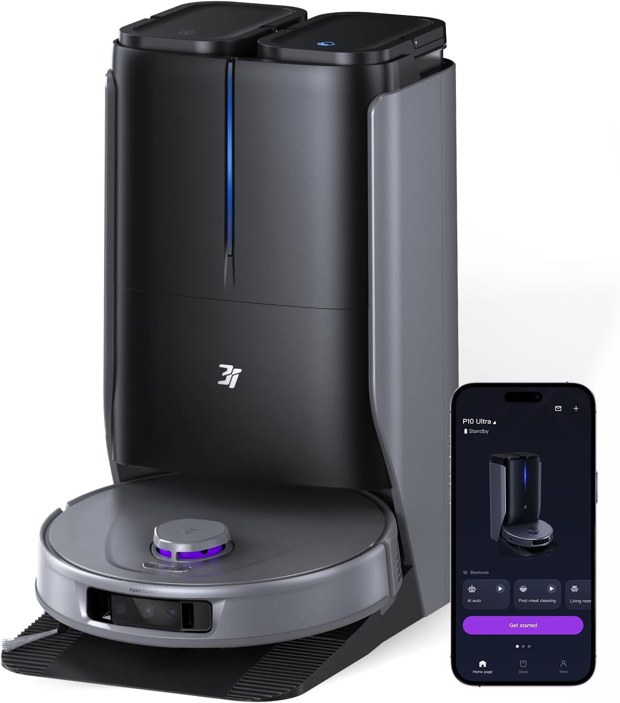

P10-Ultra - флагманская модель, объединяющая в себе мощный пылесос и полноценную систему влажной уборки с автоматическим обслуживанием. Устройство состоит из двух ключевых элементов: самого робота и многофункциональной станции самоочистки.

Робот на базовой станции